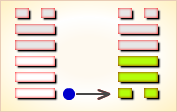
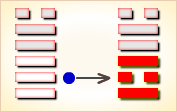
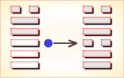
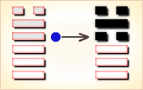
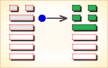

周易第43卦_夬卦(泽天夬)_兑上乾下
如有疑问互相交流，微信：470283584
周易第43卦详解
夬卦原文
夬。扬于王庭，孚号，有厉。告自邑，不利即戎，利有攸往。
象曰：泽上于天，夬。君子以施禄及下，居德则忌。
白话文解释
夬卦：王庭里正跳舞作乐。有人呼告：“有敌人来犯。”邑中传来命令：“出击不利，要严阵以待。”筮遇此爻，出外旅行则吉利。
《象辞》说：本卦上卦为兑，兑为泽；下卦为乾，乾为天，可见泽水上涨，浇灌大地，是夬卦的卦象。君子观此卦象，从而泽惠下施，不敢居功自傲，并以此为忌。
《断易天机》解
夬卦兑上乾下，为坤宫五世卦。此卦中的夬为决断、决裂，象征会有危险之事，利有攸往，往前有利。
北宋易学家邵雍解
排除决去，必须刚断；始吉终凶，谨慎自重。
得此卦者，大运将过，困难将至，宜提高警惕，谨言慎行。
台湾国学大儒傅佩荣解
时运：气运过盛，散财为吉。
财运：利己利人，财散人聚。
家宅：须防水患；婚姻不成。
身体：调养气息。
传统解卦
这个卦是异卦（下乾上兑）相叠。乾为天为健；兑为泽为悦。泽气上升，决注成雨，雨施大地，滋润万物。五阳去一阴，去之不难，决（去之意）即可，故名为夬（guài），夬即决。
大象：泽水积满而泛滥成灾，滔天之势。又五阳爻之盛势必除去唯一阴爻，故一阴孤立。
运势：目前虽吉，但困难及变动正在蕴酿中，宜提高警觉，忌骄傲，防口舌是非。
事业：处在兴盛阶段，但已孕育着普遍的危险。务必施恩泽给他人，勿居功自傲，主动团结他人，不干冒险的事。时时提高警惕，防止小人的破坏。但不可莽撞，应持和缓的手段去决断小人，避免过犹不及。
经商：市场正在走向衰落的状态，不宜大量活动，随时注意转向。开拓新领域时，加强同他人的合作。但务必充分注意别有用心的奸诈小人趁机捣乱和破坏。
求名：虚心求教，充实自身实力。但应量力而行，不可盲目自大，更不可同小人合流，图虚名而败坏事业。
婚恋：防止上介绍人的当，也应注意对方的目的。
决策：性格矛盾，往往表面刚强而内心虚弱，在关键的时刻，败坏事业。虚心听取他人劝告，切勿鲁莽，多谋深思，用柔和的态度待人处世。
台湾张铭仁解卦
夬：表示决定或缺失，是个状况卦，吉凶未定。所迟疑的事情，一定要有个决定不能再拖延，至于如何决定，可视变卦而定。否则在有所拖延，就成凶象了！
解释：卦相奇特，角龙升天行大运。
特性：思想敏锐，有理想抱负，果决，务实主义，实事求是，不投机冒险，有孤独感，宜从事专技工作。
运势：日前虽然鸿运当头，终会遇到困难与危险，凡事不可轻举妄动，宜随时警惕自己，留心意外灾害。住所可能会有变动，亦有文书、契约之失利，易生错误。慎勿傲气或自以为是，不谦和者定有灾。
家运：夕阳虽好，却近黄昏，往后有陷于惊动、痛苦之境。因此卦有盛极必反之象。
疾病：病情重宜速治，防头部、呼吸系统、肿瘤等疾。
胎孕：无灾。母胎宜节食物，且勿发怒气，否则有难产之虑。
子女：有先吉后凶之象。
周转：不可急躁，须诚意，光明之态度可成，否则有不利之象。
买卖：须诚信交易，有失败破财之害。
等人：不必等了，不会来。
寻人：宜速寻找，延误不利。
失物：相信失物已经损坏，不能寻回。
外出：不宜过于频繁，以逸待劳最佳。外出旅行吉利。
考试：不理想。
诉讼：不宜与人争执，因势孤力弱，宜寻求法律途径解决。
求事：有困难，或得不到好职位。
改行：改行者要慎重考虑。
开业：开业者不利，如已备妥，小心难关重重。
周易第43卦初九爻详解
初九爻辞
初九。壮于前趾，往不胜为咎。
象曰：不胜而往，咎也。
白话文解释
初九：脚趾受伤，仍然继续前进，将因为脚力不胜而遭致灾难。
《象辞》说：脚力不胜而继续行进，将遭灾难。
北宋易学家邵雍解
凶：得此爻者，会有无妄之灾，宜静守。做官的躁动者有损。
台湾国学大儒傅佩荣解
时运：躁进取败，动辄得咎。
财运：任意经营，伤财害己。
家宅：地势太低；门户不对。
身体：小心足疾。
初九变卦

初九爻动变得周易第28卦：泽风大过。这个卦是异卦（下巽上兑）相叠。兑为泽、为悦，巽为木、为顺，泽水淹舟，遂成大错。阴阳爻相反，阳大阴小，行动非常，有过度形象，内刚外柔。
周易第43卦九二爻详解
九二爻辞
九二。惕号，莫夜有戎，勿恤。
象曰：有戎勿恤，得中道也。
白话文解释
九二：恐惧地惊叫，夜间有敌来犯，但不足为患。
《象辞》说：有敌来犯，不足为患，因为九二之爻居下卦中位，像人得中正之道。
北宋易学家邵雍解
凶：得此爻者，多忧愁，多惊险，谨防盗窃之事发生。做官的多掌兵权。
台湾国学大儒傅佩荣解
时运：凡事谨慎，可以无虑。
财运：货物保险，才可无忧。
家宅：宜防火灾；婚姻吉祥。
身体：阴虚火盛，调养可治。
九二变卦

九二爻动变得周易第49卦：泽火革。这个卦是异卦（下离上兑）相叠。离为火、兑为泽，泽内有水。水在上而下浇，火在下而上升。火旺水干，水大火熄。二者相生亦相克，必然出现变革。变革是宇宙的基本规律。
周易第43卦九三爻详解
九三爻辞
九三。壮于頄，有凶。君子夬夬，独行遇雨，若濡有愠，无咎。
象曰：君子夬夬，终无咎也。
白话文解释
九三：颧骨受伤，这是凶象。君子匆匆忙忙地独个儿行路，碰上了雨，全身淋湿了，令人很不快，但没有灾难。
《象辞》说：君子匆匆忙忙地独个儿行路，但最后没有灾难。
北宋易学家邵雍解
凶：得此爻者，会有争诉之忧，品行端正者无忧，初见艰难，终得安乐。做官的除奸不成，反被倒咬一口。
台湾国学大儒傅佩荣解
时运：任意独行，受人疑忌。
财运：独自经营，较费时日。
家宅：早些整修；暂时不成。
身体：湿气上升，治之可愈。
九三变卦

九三爻动变得周易第58卦：兑为泽。这个卦是同卦（下泽上泽）相叠。泽为水。两泽相连，两水交流，上下相和，团结一致，朋友相助，欢欣喜悦。兑为悦也。同秉刚健之德，外抱柔和之姿，坚行正道，导民向上。
周易第43卦九四爻详解
九四爻辞
九四。臀无肤，其行次且。牵羊悔亡，闻言不信。
象曰：其行次且，位不当也；闻言不信，聪不明也。
白话文解释
九四：臀部受伤，走起路来踉踉跄跄。牵羊上路，悔恨丢失了羊儿，这是由于对别人的告诫不相信。
《象辞》说：行路艰难，因为九四阳爻而居阴位，像人处境不利。对于别人的告诫不相信，说明听觉虽好，但不明事理。
北宋易学家邵雍解
凶：得此爻者，心绪不定，所谋不成。做官的有心而力不足，难于升迁。
台湾国学大儒傅佩荣解
时运：心思不定，所谋难成。
财运：错过时机，无利可图。
家宅：四周狭隘；久之可成。
身体：皮肤有病，须防失聪。
九四变卦

九四爻动变得周易第5卦：水天需。这个卦是异卦（下乾上坎）相叠，下卦是乾，刚健之意；上卦是坎，险陷之意。以刚逢险，宜稳健之妥，不可冒失行动，观时待变，所往一定成功。
周易第43卦九五爻详解
九五爻辞
九五。苋陆夬夬，中行无咎。
象曰：中行无咎，中未光也。
白话文解释
九五：细角山羊在道路中间蹦蹦跳跳，筮遇此爻无灾难。
《象辞》说：行中正之道，仅称无灾难，大概是没有将中行之道推广施行。
北宋易学家邵雍解
平：得此爻者，营谋遂意，诉者伸，有病者愈。做官的须防奸邪之辈侵害。
台湾国学大儒傅佩荣解
时运：亲近君子，万事皆吉。
财运：尽速出手，不然有悔。
家宅：整理干净；婚姻合宜。
身体：调节气旺。
九五变卦

九五爻动变得周易第34卦：雷天大壮。这个卦是异卦（下乾上震）相叠。震为雷；乾为天。乾刚震动。天鸣雷，云雷滚，声势宏大，阳气盛壮，万物生长。刚壮有力故曰壮。大而且壮，故名大壮。四阳壮盛，积极而有所作为，上正下正，标正影直。
周易第43卦上六爻详解
上六爻辞
上六。无号，终有凶。
象曰：无号之凶，终不可长也。
白话文解释
上六：狗在哭叫，预兆着终将有凶险之事。
《象辞》说：国无号令，其势必遭凶险，说明国运衰微，终不可保。
北宋易学家邵雍解
凶：得此爻者，营谋不成，宜守常，不良者，骨肉刑克，是非缠绕。做官的难于久任，激流勇退为佳。
台湾国学大儒傅佩荣解
时运：声名大损，警惕免祸。
财运：再立新约，否则无利。
家宅：寂静不安；媒妁未成。
身体：无声可呼，已至险境。
上六变卦
上六爻动变得周易第1卦：乾为天。这个卦是同卦（下乾上乾）相叠。象征天，喻龙（德才的君子），又象征纯粹的阳和健，表明兴盛强健。乾卦是根据万物变通的道理，以“元、亨、利、贞”为卦辞，表示吉祥如意，教导人遵守天道的德行。